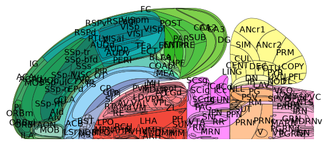
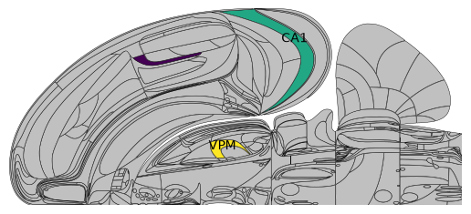
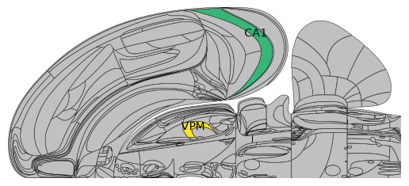
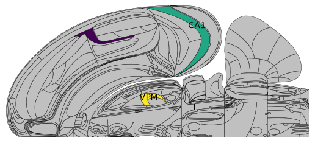
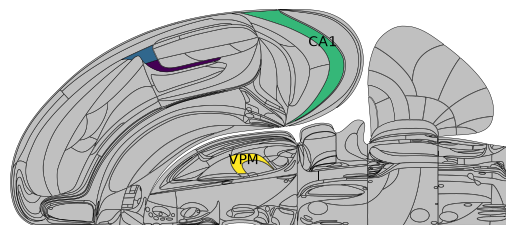
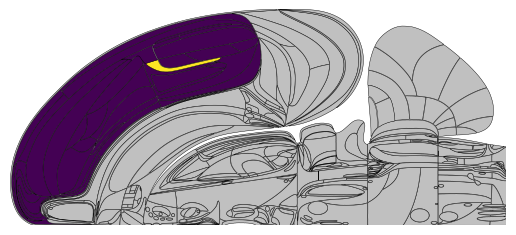
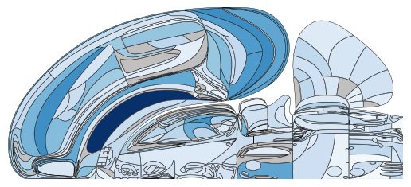
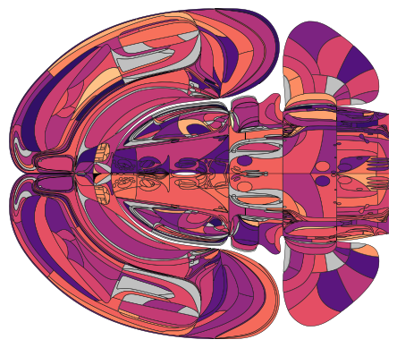
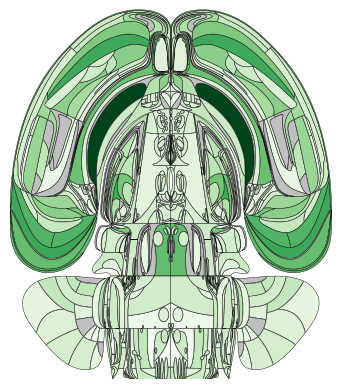

Plotting brain region values on the Swanson flat map
The Swanson flatmap is a 2D representation of the mouse brain to facilitate comparative analysis of brain data. We extended the mouse atlas presented by Hahn et al. to interface programmatically with the Allen Atlas regions.
[2]:
import numpy as np
from iblatlas.plots import plot_swanson_vector
from iblatlas.atlas import BrainRegions
br = BrainRegions()
# Plot Swanson map will default colors and acronyms
plot_swanson_vector(br=br, annotate=True)
Out[2]:
<Axes: >

What regions are represented in the Swanson flatmap
The Swanson map holds 323 brain region acronyms. To find these acronyms, use the indices stored in the swanson mapping:
[3]:
swanson_indices = np.unique(br.mappings['Swanson'])
swanson_ac = np.sort(br.acronym[swanson_indices])
swanson_ac.size
Out[3]:
323
Regions which are “children” or “parents” of a Swanson region will not be included in the acronyms. For example VISa is in Swanson, but its parent PTLp or child VISa2/3 are not:
[4]:
# Example: VISa is in Swanson
print(np.isin(['VISa'], swanson_ac))
# Example child: VISa2/3 is not in Swanson
print(np.isin(['VISa2/3'], swanson_ac))
# Example parent: PTLp is not in Swanson
print(np.isin(['PTLp'], swanson_ac))
[ True]
[False]
[False]
Also, only the indices corresponding to one hemisphere are represented in Swanson. For example, for VISa:
[5]:
# indices of VISa
indices = br.acronym2index('VISa')[1][0]
print(f'Index {indices[0]} in swanson? {indices[0] in swanson_indices}')
print(f'Index {indices[1]} in swanson? {indices[1] in swanson_indices}')
Index 347 in swanson? True
Index 1674 in swanson? False
Selecting the brain regions for plotting
You can only plot value for a given region that is in Swanson, or a parent region (see below for detailed explanation on this latter point). You cannot plot value on children regions of those in the Swanson mapping. In other words, the brain regions contains in the Swanson mapping are the lowest hierarchical level you can plot onto.
This was done to ensure there is no confusion about how data is aggregated and represented per region. For example, if you were to input values for both VISa1 and VISa2/3, it is unclear whether the mean, median or else should have been plotted onto the VISa area - instead, we ask you to do the aggregation yourself and pass this into the plotting function.
For example,
[6]:
# 'VISa', 'CA1', 'VPM' are in Swanson and all 3 are plotted
acronyms = ['VISa', 'CA1', 'VPM']
values = np.array([1.5, 3, 4])
plot_swanson_vector(acronyms, values, annotate=True,
annotate_list=['VISa', 'CA1', 'VPM'],empty_color='silver')
# 'VISa1','VISa2/3' are not in Swanson, only 'CA1', 'VPM' are plotted
acronyms = ['VISa1','VISa2/3', 'CA1', 'VPM']
values = np.array([1, 2, 3, 4])
plot_swanson_vector(acronyms, values, annotate=True,
annotate_list=['VISa1','VISa2/3', 'CA1', 'VPM'],empty_color='silver')
/opt/hostedtoolcache/Python/3.12.14/x64/lib/python3.12/site-packages/iblatlas/regions.py:663: RuntimeWarning: All-NaN slice encountered
all_values = np.nanmedian(v, axis=0)
/opt/hostedtoolcache/Python/3.12.14/x64/lib/python3.12/site-packages/iblatlas/regions.py:663: RuntimeWarning: All-NaN slice encountered
all_values = np.nanmedian(v, axis=0)
Out[6]:
<Axes: >


You can plot onto the parent of a region in the Swanson mapping, for example you can plot over PTLp (which is the parent of VISa and VISrl). This paints the same value across all regions of the Swanson mapping contained in the parent region.
[7]:
# Plotting over a parent region (PTLp) paints the same value across all children (VISa and VISrl)
acronyms = ['PTLp', 'CA1', 'VPM']
values = np.array([1.5, 3, 4])
plot_swanson_vector(acronyms, values, annotate=True,
annotate_list=['PTLp', 'CA1', 'VPM'],empty_color='silver')
/opt/hostedtoolcache/Python/3.12.14/x64/lib/python3.12/site-packages/iblatlas/regions.py:663: RuntimeWarning: All-NaN slice encountered
all_values = np.nanmedian(v, axis=0)
Out[7]:
<Axes: >

Plotting over a parent and child region simultaneously will overwrite the corresponding portion of the parent region:
[8]:
# Plotting over 'PTLp' and overwriting the 'VISrl' value
acronyms = ['PTLp','VISrl', 'CA1', 'VPM']
values = np.array([1, 2, 3, 4])
plot_swanson_vector(acronyms, values, annotate=True,
annotate_list=['PTLp','VISrl', 'CA1', 'VPM'],empty_color='silver')
/opt/hostedtoolcache/Python/3.12.14/x64/lib/python3.12/site-packages/iblatlas/regions.py:663: RuntimeWarning: All-NaN slice encountered
all_values = np.nanmedian(v, axis=0)
Out[8]:
<Axes: >

As such, you can easily fill in a whole top-hierarchy region, supplemented by one particular region of interest.
[9]:
acronyms = ['Isocortex', 'VISa']
values = np.array([1, 2])
plot_swanson_vector(acronyms, values, annotate=True,
annotate_list=['Isocortex', 'VISa'],empty_color='silver')
/opt/hostedtoolcache/Python/3.12.14/x64/lib/python3.12/site-packages/iblatlas/regions.py:663: RuntimeWarning: All-NaN slice encountered
all_values = np.nanmedian(v, axis=0)
Out[9]:
<Axes: >

Mapping to the swanson brain regions
Similarly as explained in this page, you can map brain regions to those found in Swanson using br.acronym2acronym:
[10]:
br.acronym2acronym('MDm', mapping='Swanson')
Out[10]:
array(['MD'], dtype=object)
Plotting values on the swanson flatmap
Single hemisphere display
You simply need to provide an array of brain region acronyms, and an array of corresponding values.
[11]:
# prepare array of acronyms
acronyms = np.array(
['VPLpc', 'PO', 'LP', 'DG', 'CA1', 'PTLp', 'MRN', 'APN', 'POL',
'VISam', 'MY', 'PGRNl', 'IRN', 'PARN', 'SPVI', 'NTS', 'SPIV',
'NOD', 'IP', 'AON', 'ORBl', 'AId', 'MOs', 'GRN', 'P', 'CENT',
'CUL', 'COApm', 'PA', 'CA2', 'CA3', 'HY', 'ZI', 'MGv', 'LGd',
'LHA', 'SF', 'TRS', 'PVT', 'LSc', 'ACAv', 'ACAd', 'MDRNv', 'MDRNd',
'COPY', 'PRM', 'DCO', 'DN', 'SIM', 'MEA', 'SI', 'RT', 'MOp', 'PCG',
'ICd', 'CS', 'PAG', 'SCdg', 'SCiw', 'VCO', 'ANcr1', 'ENTm', 'ENTl',
'NOT', 'VPM', 'VAL', 'VPL', 'CP', 'SSp-ul', 'MV', 'VISl', 'LGv',
'SSp-bfd', 'ANcr2', 'DEC', 'LD', 'SSp-ll', 'V', 'SUT', 'PB', 'CUN',
'ICc', 'PAA', 'EPv', 'BLAa', 'CEAl', 'GPe', 'PPN', 'SCig', 'SCop',
'SCsg', 'RSPd', 'RSPagl', 'VISp', 'HPF', 'MGm', 'SGN', 'TTd', 'DP',
'ILA', 'PL', 'RSPv', 'SSp-n', 'ORBm', 'ORBvl', 'PRNc', 'ACB',
'SPFp', 'VM', 'SUV', 'OT', 'MA', 'BST', 'LSv', 'LSr', 'UVU',
'SSp-m', 'LA', 'CM', 'MD', 'SMT', 'PFL', 'MARN', 'PRE', 'POST',
'PRNr', 'SSp-tr', 'PIR', 'CTXsp', 'RN', 'PSV', 'SUB', 'LDT', 'PAR',
'SPVO', 'TR', 'VISpm', 'MS', 'COApl', 'BMAp', 'AMd', 'ICe', 'TEa',
'MOB', 'SNr', 'GU', 'VISC', 'SSs', 'AIp', 'NPC', 'BLAp', 'SPVC',
'PYR', 'AV', 'EPd', 'NLL', 'AIv', 'CLA', 'AAA', 'AUDv', 'TRN'],
dtype='<U8')
values = np.array([ 7.76948616, 25.51506047, 21.31094194, 23.11353701, 26.18071135,
16.42116195, 22.4522099 , 20.04564731, 9.98702368, 11.00518771,
11.23163309, 3.90841049, 11.44982496, 7.49984019, 10.59146742,
7.68845853, 10.38817938, 6.53187499, 14.22331705, 19.26731921,
14.6739601 , 10.37711987, 19.87087356, 12.56497513, 11.03204901,
12.85149192, 10.39367399, 5.26234078, 7.36780286, 7.77672633,
22.30843636, 9.63356153, 11.33369508, 7.70210975, 14.56984632,
7.95488849, 9.85956065, 10.40381726, 6.31529234, 7.82651245,
11.3339313 , 12.26268021, 8.67874273, 8.07579753, 10.14307203,
10.08081832, 7.88595354, 7.49586605, 12.6491355 , 7.92629876,
12.52110187, 14.27405322, 25.95808524, 6.52603939, 3.15160563,
11.60061018, 11.1043498 , 8.0733422 , 11.71522066, 4.62765218,
7.49833868, 18.78977643, 17.00685931, 6.3841865 , 21.0516987 ,
13.16635271, 13.32514284, 39.00407907, 10.17439742, 10.71338756,
12.98324876, 9.36698057, 18.72583288, 8.86341551, 8.59402471,
14.40309408, 11.2151223 , 8.54318159, 7.27041139, 7.54384726,
7.12004486, 8.61247715, 6.24836557, 7.61490273, 7.97743213,
5.90638179, 11.18067752, 9.60402511, 10.27972062, 4.88568098,
5.15238733, 9.48240265, 5.5200633 , 17.34425384, 20.51738915,
8.67575586, 10.13415575, 12.55792577, 11.28995505, 12.01846393,
16.44519718, 11.55540348, 12.6760064 , 14.59124425, 16.08650743,
5.49252396, 14.21853759, 9.80928243, 11.1998899 , 8.53843453,
8.95692822, 7.44622149, 9.41208445, 10.00368097, 18.36862111,
5.90905433, 18.73273459, 10.41462726, 10.38639344, 13.71164211,
8.1023596 , 7.57087137, 3.95315742, 12.24423806, 10.4316517 ,
10.75912468, 9.21246988, 21.71756051, 8.55320981, 10.69256597,
8.20796144, 24.13594074, 4.55095547, 12.43055174, 7.00374928,
4.72499044, 6.22081559, 6.50700078, 6.73499461, 12.77964412,
8.8475468 , 11.20443401, 6.59475644, 8.59815892, 7.16696761,
10.62813483, 7.77992602, 16.02889234, 9.21649532, 7.08618021,
5.56980282, 3.61976479, 6.86178595, 13.44050831, 11.9525432 ,
7.21974504, 6.28513041, 6.8381433 , 5.93095918, 8.12844537,
8.62486916])
# and display on a single hemishphere, using a blue colormap
plot_swanson_vector(acronyms, values, cmap='Blues', br=br)
Out[11]:
<Axes: >

Lateralized display
A more advanced example is when each hemisphere is assigned a different value. For this, you need to convert the acronyms to Allen ID, and assign positive/negative ID values to differentiate between the two hemispheres.
[12]:
# In our atlas convention, differentiating between hemishperes is done using negative indices
regions_rl = np.r_[br.acronym2id(acronyms), -br.acronym2id(acronyms)]
# assign random values for the sake of this example
values_rl = np.random.randn(regions_rl.size)
# display with an explicit dual hemisphere setup
plot_swanson_vector(regions_rl, values_rl, hemisphere='both', cmap='magma', br=br)
Out[12]:
<Axes: >

Portrait orientation
One can also mirror the hemispheres and orient the display in portrait mode.
[13]:
plot_swanson_vector(acronyms=acronyms, values=values, orientation='portrait', cmap='Greens', hemisphere='mirror')
/opt/hostedtoolcache/Python/3.12.14/x64/lib/python3.12/site-packages/iblatlas/regions.py:663: RuntimeWarning: All-NaN slice encountered
all_values = np.nanmedian(v, axis=0)
Out[13]:
<Axes: >
